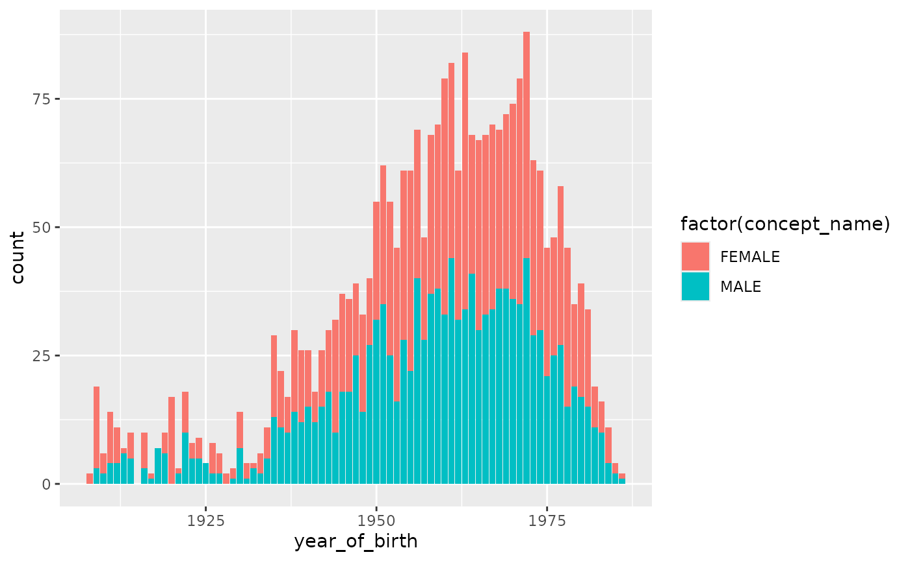

library(HadesExtras)
# options("DEBUG_DATABASECONNECTOR_DBPLYR" = FALSE)Getting an Eunomia database for testing
# Set EUNOMIA_DATA_FOLDER if not already set
if (dir.exists(Sys.getenv("EUNOMIA_DATA_FOLDER")) == FALSE) {
Sys.setenv(EUNOMIA_DATA_FOLDER = tempdir())
}
# Get the path to the Eunomia database
pathToGiBleedEunomiaSqlite <- Eunomia::getDatabaseFile("GiBleed", overwrite = FALSE)
#> attempting to download GiBleed
#> attempting to extract and load: /tmp/Rtmpk8QRIJ/GiBleed_5.3.zip to: /tmp/Rtmpk8QRIJ/GiBleed_5.3.sqliteConfiguration
We need the following configuration to connect to the database and to
specify the OMOP-CDM schema. For convenience, this can be written in a
parameterized yaml format and some parameters can be set using
readAndParseYaml function.
config_yaml <- "
database:
databaseId: E1
databaseName: GiBleed
databaseDescription: Eunomia database GiBleed
connection:
connectionDetailsSettings:
dbms: sqlite
server: <pathToGiBleedEunomiaSqlite>
cdm:
cdmDatabaseSchema: main
vocabularyDatabaseSchema: main
"
pathToConfigYaml <- file.path(tempdir(), "config.yml")
writeLines(config_yaml, pathToConfigYaml)
config <- readAndParseYaml(pathToConfigYaml, pathToGiBleedEunomiaSqlite = pathToGiBleedEunomiaSqlite)CDMHandled
CDMHandled is a R6 object connected to a OMOP-CDM. It includes attributes and functions to retrieve information from the database and work with the tables.
connectionDetails <- rlang::exec(DatabaseConnector::createConnectionDetails, !!!config$connection$connectionDetailsSettings)
connectionHandler <- ResultModelManager::ConnectionHandler$new(
connectionDetails = connectionDetails,
loadConnection = FALSE
)
CDMdb <- CDMdbHandler$new(
databaseId = config$database$databaseId,
databaseName = config$database$databaseName,
databaseDescription = config$database$databaseDescription,
connectionHandler = connectionHandler,
cdmDatabaseSchema = config$cdm$cdmDatabaseSchema,
vocabularyDatabaseSchema = config$cdm$vocabularyDatabaseSchema
)Or for convenience createCDMdbHandlerFromList can be
used.
CDMdb <- createCDMdbHandlerFromList(config)
#> Connecting using SQLite driver
#> Inserting data took 0.00853 secsFirst thing to do is to check the status of the connection.
CDMdb$connectionStatusLog not only shows if the connection
is correct, but also if the tempEmulationSchema works, and
all the CDM and Vocabulary tables are available in the database.
CDMdb$connectionStatusLog
#> # A tibble: 4 × 5
#> databaseId databaseName type step message
#> <chr> <chr> <fct> <chr> <chr>
#> 1 E1 GiBleed SUCCESS Check database connection Valid con…
#> 2 E1 GiBleed SUCCESS Check temp table creation can creat…
#> 3 E1 GiBleed SUCCESS vocabularyDatabaseSchema connection Connected…
#> 4 E1 GiBleed SUCCESS cdmDatabaseSchema connection Connected…Function reactable_connectionStatus creates an
interactive table with this information.
CDMdb$connectionStatusLog |>
reactable_connectionStatus()We can get information on the CDM and Vocabulary version:
CDMdb$CDMInfo
#> # A tibble: 1 × 3
#> cdm_source_name cdm_source_abbreviation cdm_version
#> <chr> <chr> <chr>
#> 1 Synthea synthetic health database Synthea v5.3.1
CDMdb$vocabularyInfo
#> # A tibble: 1 × 2
#> vocabulary_name vocabulary_version
#> <chr> <chr>
#> 1 OMOP Standardized Vocabularies v5.0 18-JAN-19Tables in the database can be used as if they were tibbles thanks to dbplyr.
CDMdb$getTblCDMSchema$person() |>
dplyr::count(year_of_birth)
#> # Source: SQL [?? x 2]
#> # Database: DatabaseConnectorDbiConnection
#> year_of_birth n
#> <dbl> <dbl>
#> 1 1908 2
#> 2 1909 19
#> 3 1910 6
#> 4 1911 14
#> 5 1912 11
#> 6 1913 7
#> 7 1914 10
#> 8 1916 10
#> 9 1917 2
#> 10 1918 7
#> # ℹ more rows
CDMdb$getTblCDMSchema$person() |>
dplyr::left_join(
CDMdb$getTblVocabularySchema$concept() |> dplyr::select(concept_id, concept_name),
by = c("gender_concept_id" = "concept_id")
) |>
ggplot2::ggplot(ggplot2::aes(x = year_of_birth, fill = factor(concept_name))) +
ggplot2::geom_bar()
#> Note: method with signature 'DBIConnection#SQL' chosen for function 'dbQuoteIdentifier',
#> target signature 'DatabaseConnectorDbiConnection#SQL'.
#> "DatabaseConnectorConnection#character" would also be valid